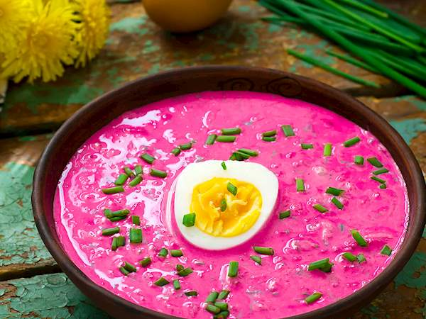

Saltibarsciai

Dish Description
This refreshing, cold beetroot soup is a part of traditional Lithuanian cuisine. It consists of a creamy blend of pickled or boiled beetroots and tangy kefir or buttermilk, poured over grated cucumbers and hard-boiled eggs. The whole soup is generously seasoned with dill, and usually left to set until all the flavors are thoroughly combined.
It is usually prepared in the summertime, and is best served chilled, preferably with potatoes on the side. It can be enjoyed as an appetizer or a light main course.
Ingredients
- 500g kefir
- 100g fresh cucumbers
- 10 onion leaves
- a pinch of fresh dill
- 1 egg
- salt, to taste
- 400 g potatoes, boiled
- dill, chopped, to taste
Steps
- Finely chop the vegetables: cucumbers, beets (you may grate these), onion leaves and dill. Mix them all in a large bowl.
- Pour the kefir over the vegetables, flavor with salt according to taste, mix and let stand for several minutes (the longer the mixed vegetables stand, the tastier the soup will be).
- Pour the soup into bowls, cut the boiled egg in pieces into the bowls. The cold soup is served with hot boiled potatoes flavored with dill.